Gallery#
Explore a curated set of example visualizations using hvPlot with different backends and datasets. For more examples using hvPlot and other HoloViz tools to solve real world problems, see the examples website.
Basic Charts#
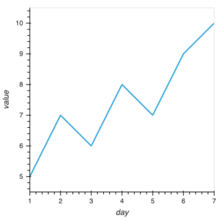
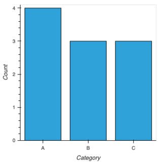
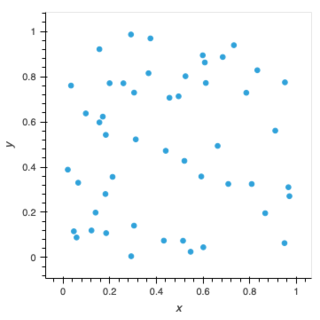
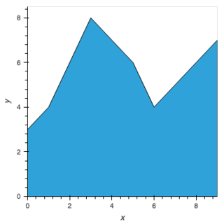
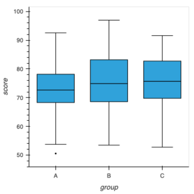
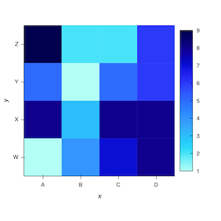
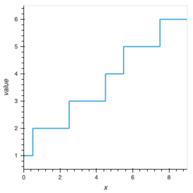
Time Series#
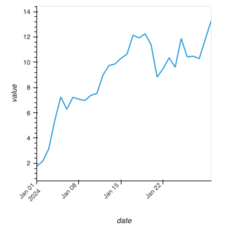
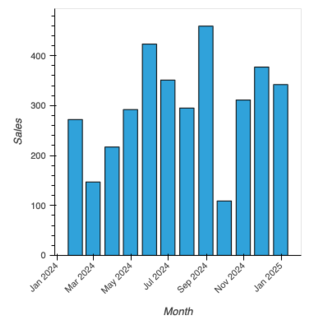
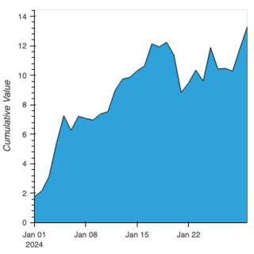
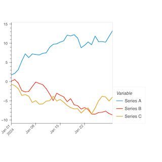
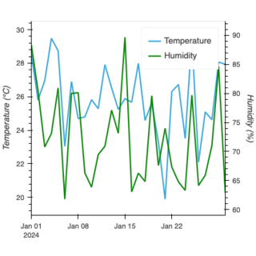
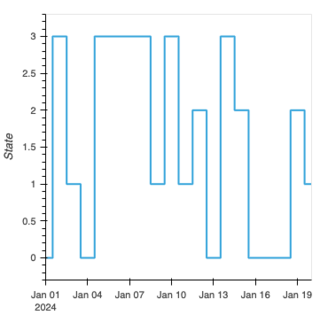
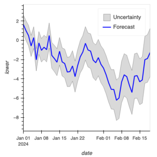
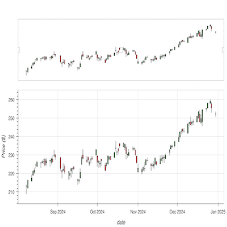
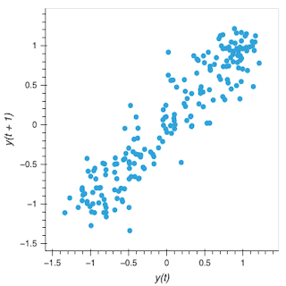
Categorical#
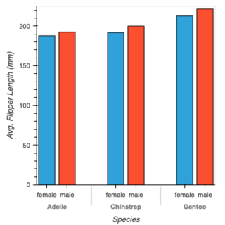
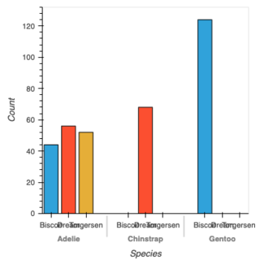
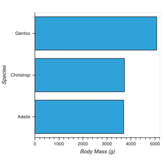
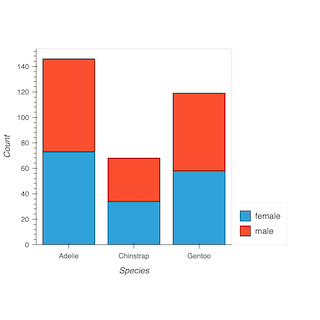
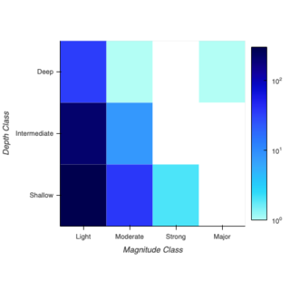
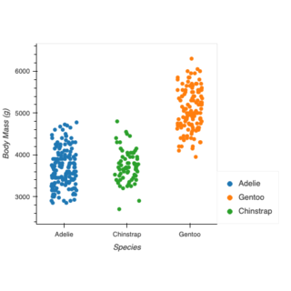
Statistical#
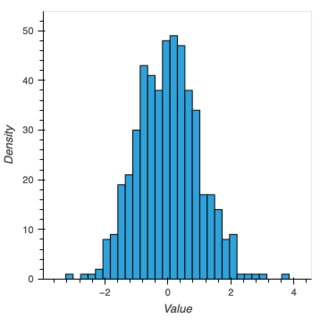
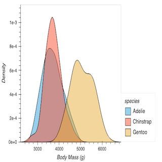
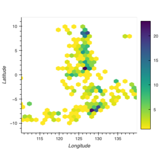
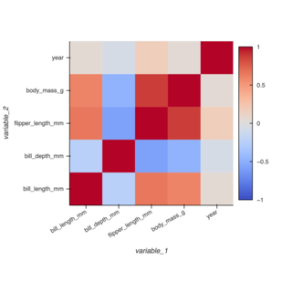
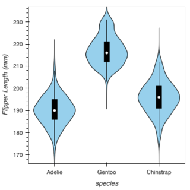
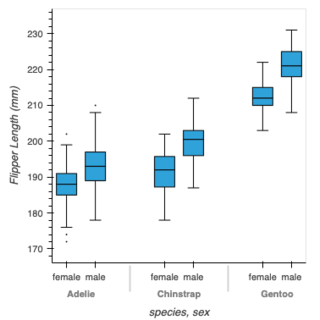
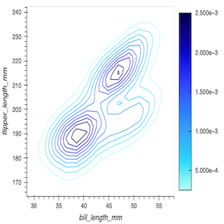
Geospatial#
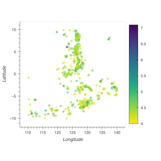
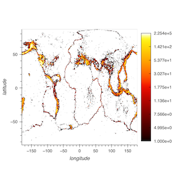
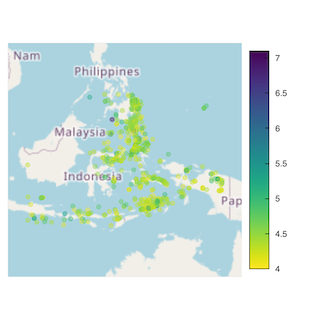
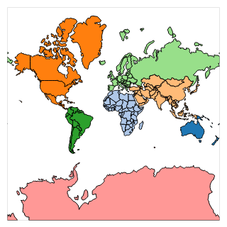
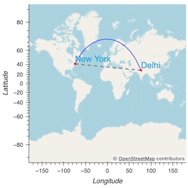
Multi-Dimensional#
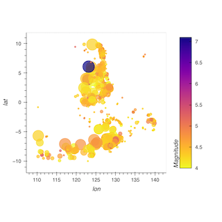
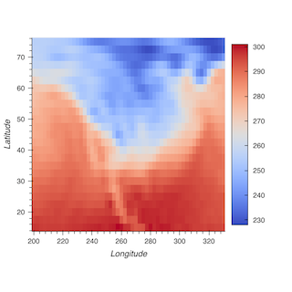
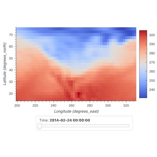
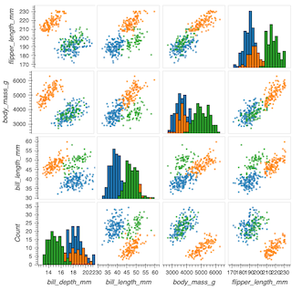
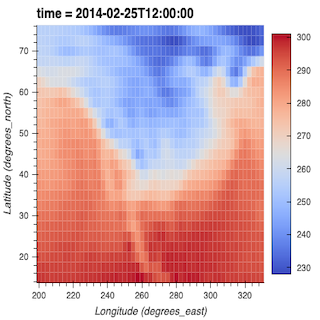
Interactivity#
Note
The examples in this section require a live Python process (e.g., Jupyter Notebook, JupyterLab, or Panel app) and will not function on static documentation pages.
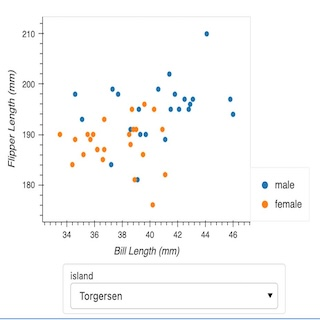
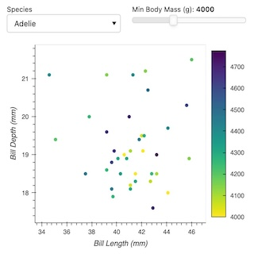
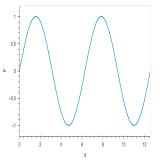
Advanced Plots#
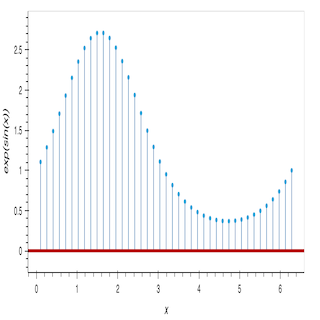